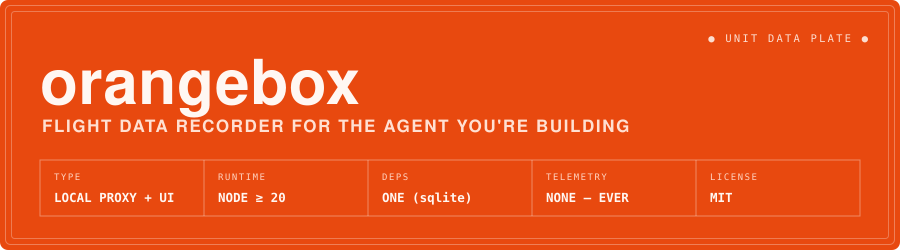
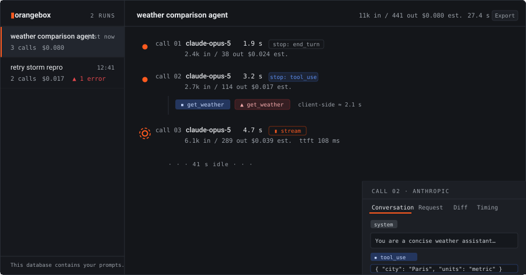
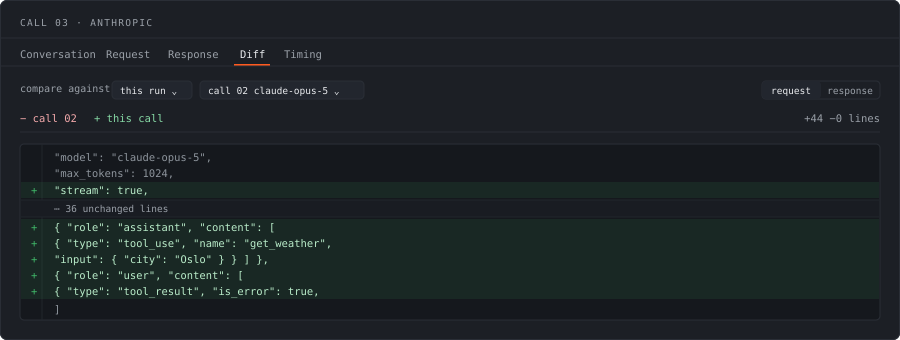
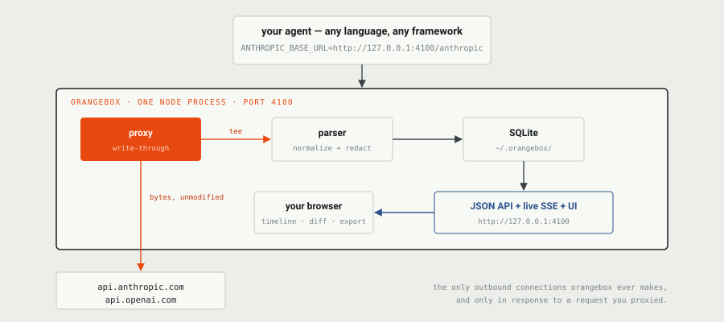

Point your agent at a local port and press play. orangebox records every LLM API call it makes — the exact prompt, the tool calls, the stream, the retries, the tokens, the cost — into one SQLite file on your machine, and draws each run as a timeline you can inspect, diff, and export.
Aircraft black boxes are painted international orange so they can be found. Same idea: when your agent crashes, the evidence should survive.
Needs Node 20 or newer. Nothing to sign up for, nothing to configure.
npx -y github:EzraStone/orangebox
export ANTHROPIC_BASE_URL="http://127.0.0.1:4100/anthropic" export OPENAI_BASE_URL="http://127.0.0.1:4100/openai"
The UI opens at http://127.0.0.1:4100 and fills in as your agent runs. Prefer not to touch environment variables at all? Let orangebox set them for you, and get exact run boundaries for free:
npx -y github:EzraStone/orangebox run --name "checkout bot" -- node agent.js
orangebox installs straight from GitHub with the commands above, which is why they read github:EzraStone/orangebox rather than the shorter npx orangebox. Once the package is published to npm, the short form will work and these will keep working.

Click any call and read the full message history the model saw at that moment — system prompt, every turn, tool results injected — as it received it, not as you think you assembled it.
Proportional latency, tool gaps, and stop-reason chips make a 40-second tool call or a 3× retry storm obvious without reading anything.
Tokens and estimated USD per call and per run. Always labelled "est." — and an em-dash with a reason when the numbers aren't knowable, never a confident $0.00.
Chunks relay the instant they arrive, then the transcript is folded back into a normal response object. A streamed call reads exactly like a non-streamed one, with real TTFT.
The question you actually have on turn five is what changed since turn four? Any call can be diffed against another — the previous call by default, or any call in any other run. Long unchanged stretches collapse, so a one-line change in a 6,000-line payload is one click instead of an eyeball comparison.

orangebox records the agent you are building, not the agent CLI you are using.
If you are writing agent code yourself — against the Anthropic or OpenAI SDK, or on top of a framework like LangGraph — orangebox records that traffic. It sits at the HTTP layer, so it does not care which client library, language, or framework you picked, and there is nothing for it to fall behind on when you switch.
If instead you want to see inside an off-the-shelf coding-agent CLI — Claude Code, Codex CLI, Gemini CLI, Cursor CLI and friends — a tool purpose-built for those, like claude-tap, is the better fit: it knows those specific tools, auto-detects their auth, and needs no configuration at all. orangebox is deliberately not competing for that job.
Same mechanism, different target. Pick the one aimed at your problem.

Requests are forwarded untouched and teed to a parser that writes a normalized record to ~/.orangebox/orangebox.db. The same port serves the UI, a JSON API, and a live feed so the timeline updates while your agent is still running.
Recording happens after your client's response is finished — never in the hot path. Measured against a local mock, on one machine:
| Metric | Measured | Budget |
|---|---|---|
| Added latency, non-streamed call | 0.73 ms p50 | < 5 ms |
| 50 concurrent streams, event-loop lag | 31 ms max | < 50 ms |
| Request → recorded | 3 ms p50 | < 150 ms |
| UI open, 1000-call run | 11 ms | < 500 ms |
The database contains your prompts. So do its exports. That is the whole product — treat both accordingly.
What orangebox does not store is your API keys. Request headers are reduced to a three-item allowlist before anything is written, and any header whose name looks like a credential is dropped even if allowlisted by mistake. Keys live in process memory only for the duration of the upstream request and never reach the database, the logs, an export, or the UI. There is a test that greps for a canary key and fails if it finds one.
It binds to 127.0.0.1 and has no authentication, so --host 0.0.0.0 would expose every recorded prompt to your network. orangebox says so, in red, if you do it.
Outbound connections go to api.anthropic.com and api.openai.com only, and only in direct response to a request you proxied. No version checks, no telemetry, no analytics — not in this version and not in any future one.
~/.orangebox/orangebox.db, or wherever --db points. Delete it and it is gone. orangebox clear does the same thing with a confirmation prompt.orangebox export <run-id> writes a self-contained JSON file with everything needed to understand the run, no database access required. Attach it to a bug report — remembering that it contains your prompts.